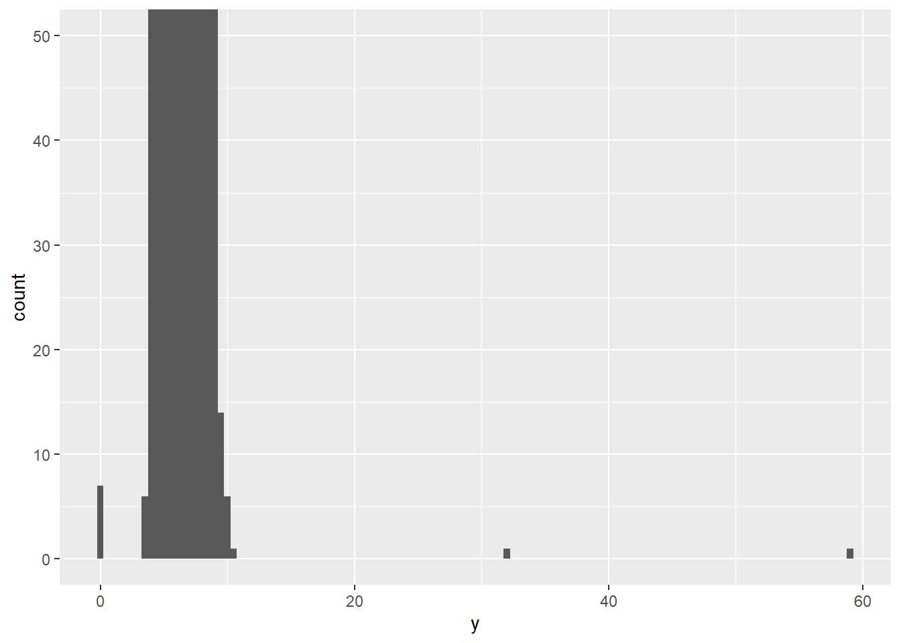
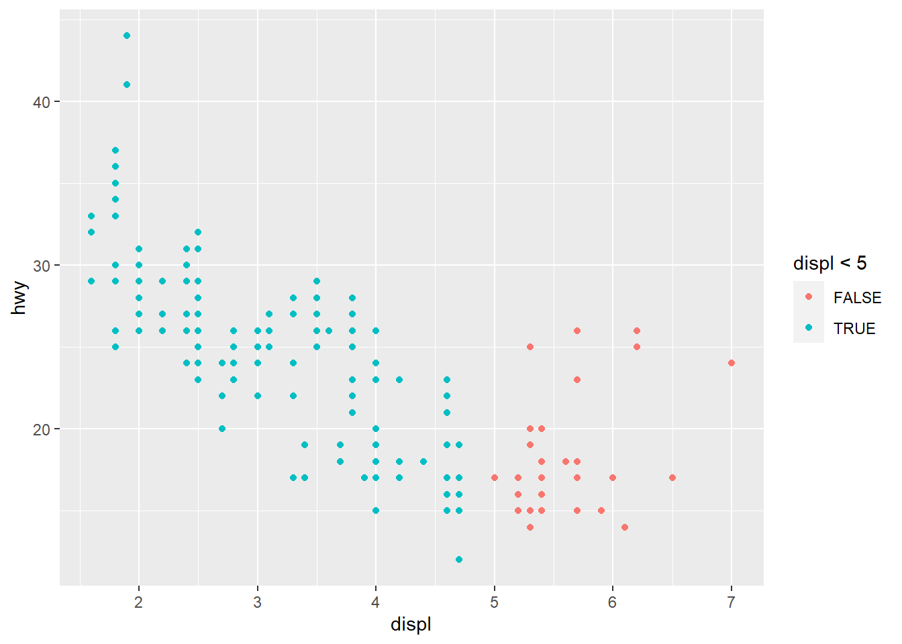
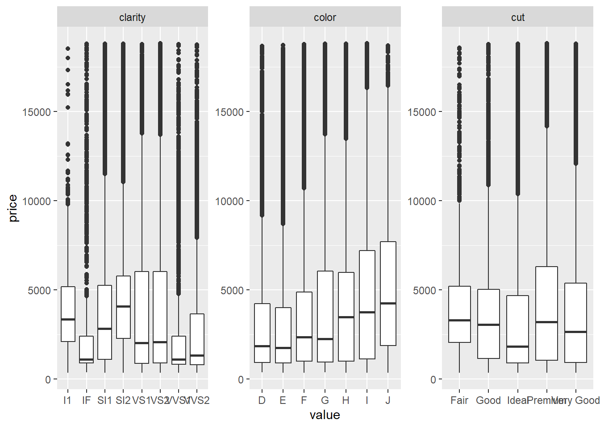
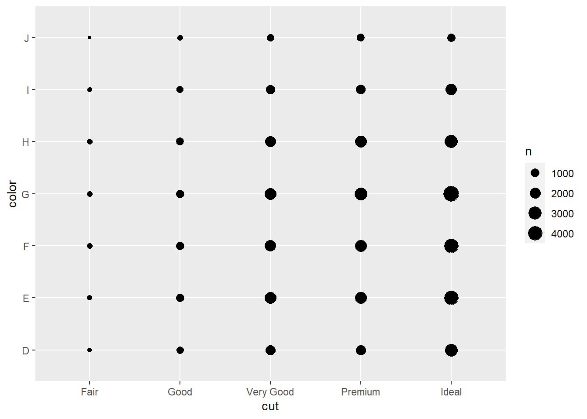
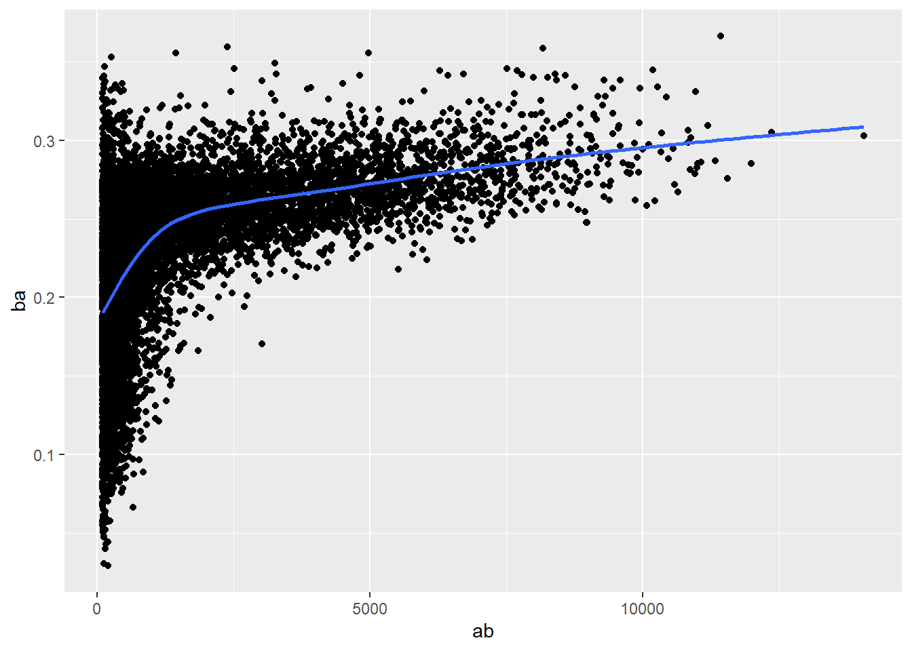
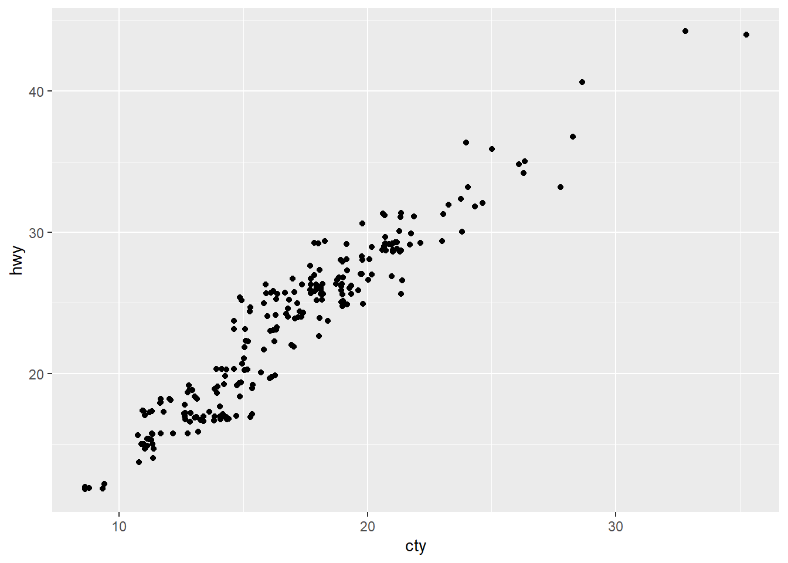
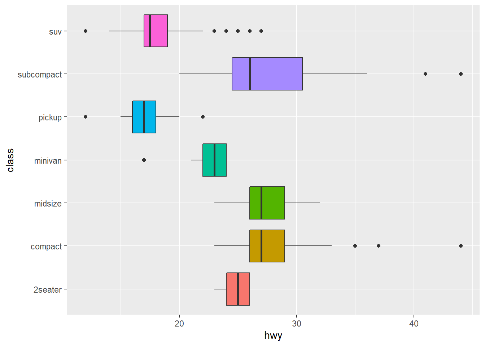
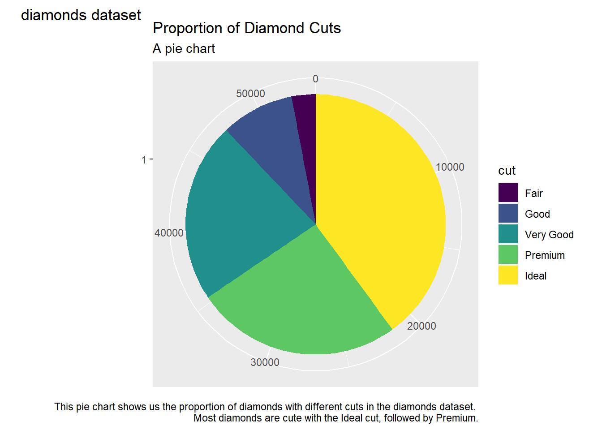

Chapter 3 Data Visualization
3.1 Skipping this section
3.2 First Steps
Use the mpg data frame and visualization techniques to answer this question: Do cars with big engines use more fuel than cars with small engines?
3.2.1 The mpg data frame
The mpg dataframe is included in the ggplot2 package. It contains data on 38 car models, collected by the US Environmental Protection Agency.
## # A tibble: 234 x 11
## manufacturer model displ year cyl trans drv cty hwy fl class
## <chr> <chr> <dbl> <int> <int> <chr> <chr> <int> <int> <chr> <chr>
## 1 audi a4 1.8 1999 4 auto(l~ f 18 29 p comp~
## 2 audi a4 1.8 1999 4 manual~ f 21 29 p comp~
## 3 audi a4 2 2008 4 manual~ f 20 31 p comp~
## 4 audi a4 2 2008 4 auto(a~ f 21 30 p comp~
## 5 audi a4 2.8 1999 6 auto(l~ f 16 26 p comp~
## 6 audi a4 2.8 1999 6 manual~ f 18 26 p comp~
## 7 audi a4 3.1 2008 6 auto(a~ f 18 27 p comp~
## 8 audi a4 quat~ 1.8 1999 4 manual~ 4 18 26 p comp~
## 9 audi a4 quat~ 1.8 1999 4 auto(l~ 4 16 25 p comp~
## 10 audi a4 quat~ 2 2008 4 manual~ 4 20 28 p comp~
## # ... with 224 more rowsWe can use ?mpg to get more information on the dataframe.
The dataframe has 234 rows with the following 11 variables:
- manufacturer - manufacturer name
- model - model name
- displ - engine displacement, in litres
- year - year of manufacture
- cyl - number of cylinders
- trans - type of transmission
- drv - the type of drive train, where f = front-wheel drive, r = rear wheel drive, 4 = 4wd
- cty - city miles per gallon
- hwy - highway miles per gallon
- fl - fuel type
- class - “type” of car
3.2.2 Creating a ggplot
Plot disp on the x-axis and hwy on the y-axis.

Notice the negative relationship between engine size (displ) and highway fuel efficiency (hwy), indicating that cars with big engines use more fuel.
Not in book: Let’s try this with city mileage as well.

Looks pretty much the same as highway mileage.
3.2.3 Notes on ggplot
The call to ggplot() create a coordinate system which we’ll add layers to. We connect a dataset to the plot using the data argument. This creates an empty plot.
3.2.4 Exercises
- Run ggplot(data = mpg). What do you see?

Just a blank figure.
- How many rows are in mpg? How many columns?
## [1] "rows = 234"## [1] "columns = 11"- What does the drv variable describe? Read the help for ?mpg to find out.
?mpg
drvdescribes the type of drive train in the vehicle, where
- f = front-wheel drive
- r = rear-wheel drive
- 4 = 4-wheel drive
- Make a scatterplot of hwy vs cyl.
- What happens if you make a scatterplot of class vs drv? Why is the plot not useful?
This is not useful because both of these variables are categorical. We’re not gaining much information by displaying the data as a scatter plot.
3.3 Aesthetic mappings
Mapping aesthetics in your plot to variables in the data can help to illuminate interesting patterns. Let’s map the class cariable to a plot of displ and hwy to see how those distribute.

We’ve mapping the colors of the points to the class variable. The 2seater class seem to be outliers with large engines and good hwy mileage. This makes sense because these sports cars have large engines with small bodies.
We can also map variables to the size aesthetic. It’s best not to map size to a categorical variable.
## Warning: Using size for a discrete variable is not advised.
We also have the alpha or shape aesthetics.
## Warning: Using alpha for a discrete variable is not advised.
## Warning: The shape palette can deal with a maximum of 6 discrete values because
## more than 6 becomes difficult to discriminate; you have 7. Consider
## specifying shapes manually if you must have them.## Warning: Removed 62 rows containing missing values (geom_point).
The shapes aesthetic can only map six categories, and the rest will not be included.
You can also set the aesthetic properties manually. When the aesthetic is set manually (and not depending on a variable), it must be set OUTSIDE of the aes call.

3.3.1 Exercises
- What’s gone wrong with this code? Why are the points not blue?
ggplot(data = mpg) + geom_point(mapping = aes(x = displ, y = hwy, color = "blue"))
The color is set manually, so it needs to be outside of the aes() call.
- Which variables in mpg are categorical? Which variables are continuous? (Hint: type ?mpg to read the documentation for the dataset). How can you see this information when you run mpg? ?mpg str(mpg)
The categorical variables are:
- manufactuerer
- model
- year
- cyl
- trans
- drv
- cty
- hwy
- fl
- class
The continuous variables are:
- displ
When we look at the mpg dataframe. We can look at the type of data that is in each column. chr variables are categorical. num variables are continuous. int variables aren’t technically categorical nor continuous. Treating them as categorical is actually reducing the information that we have, so we might want to consider them as ordinal.
- Map a continuous variable to color, size, and shape. How do these aesthetics behave differently for categorical vs. continuous variables?
Continuous Case:
# map shape - doesn't work
# ggplot(data = mpg) +
# geom_point(mapping = aes(x = displ, y = hwy, shape = displ))Categorical Case:

## Warning: Using size for a discrete variable is not advised.
Shape doesn’t map with a continuous variable. Color takes on a gradient.
Size doesn’t work well with a categorical variable.
- What happens if you map the same variable to multiple aesthetics?
# map color and size
ggplot(data = mpg) +
geom_point(mapping = aes(x = displ, y = hwy, color = displ, size = displ))We get both of the aesthetics on the same plot.
- What does the stroke aesthetic do? What shapes does it work with? (Hint: use ?geom_point) ?geom_point
The stroke aesthetic modifies the width of the border for each point.
- What happens if you map an aesthetic to something other than a variable name, like aes(colour = displ < 5)? Note, you’ll also need to specify x and y.

We can set functions to set the aesthetics according to the data.
3.4 Skipping this section
3.5 Facets
Facets allow us to split plots into multiple subplots. We can facet the plot by a single variable using facet_wrap(). The first argument of facep_wrap() is a formula which specifies the variable to so split the plot on.

We can facet the plot on the combination to two variables as well, using facet_grid().
To avoid rows and columns, we can use . instead of a variable name.
ggplot(data = mpg) +
geom_point(mapping = aes(x = displ, y = hwy,
color = class)) +
facet_grid(. ~ class)
3.5.1 Exercises
- What happens when you facet on a continuous variable?

Creating the facet using a continuous variable splits up the graph into each of the continuous values, resulting in a terrible graph.
- What do the empty cells in plot with
facet_grid(drv ~ cyl)mean?

The empty plots are facets that did not have any corresponding data. For instance, rear-wheel-drive did not have any cars with engine displacement (displ) of 4 or 5 litres.
How do they relate to this plot?

We see that we’re missing points at each of the variable combinations that aren’t present in our dataset.
- What plots does the following code make? What does
.do?


We create facets using just one variable. The . retains the rows or columns so that we don’t tile in that direction.
- Take the first faceted plot in this section:

What are the advantages to using faceting instead of the color aesthetic? What are the disadvantages? How might the balance change if you had a larger dataset?
We can look at the color aesthetic here to compare.

One thing we can see immediately is that the overlapping points make it more difficult to look at a single group when we use the color aesthetic compared to the facet aesthetic. If we’re interested in comparing points and looking for patterns within groups, then the facet aesthetic is more usefule here.
A disadvantage of using facets is that we lose some ability to compare across groups. With the color aesthetic, we immediately see how groups are mixed into one another, but this is less obvious with the facets.
Depending on how many groups we’re comparing, each of these aesthetics will change as well. If we have too many groups, facets will quickly become overwhelming to look at. In larger datasets with fewer groups, we might prefer to separate groups using facets so that we have less density per plot.
- Read
?facet_wrap. What doesnrowdo? What doesncoldo? What other options control the layout of the individual panels? Why doesn’tfacet_grid()havenrowandncolarguments?
The facet_wrap function wraps a sequence of panels into a 2-dimensional figure. The nrow and ncol arguments allow you to define the number of rows and columns for the wrapped figure.
The as.table option controls the order of the panels in the output. If as.table is TRUE (default), then te highest values will be at the bottom-right, otherwise, the highest value is at the top-left.
The dir option specifies whether the direction should be “h” for horizontal (default) or “v” for vertical.
facet_grid() does not have the nrow or ncol argumetns because we pass in the rows and cols arguments to define the groups that will create the rows and columns of the grid.
- When using
facet_grid()you should usually put the variable wit more unique levels in the columns. Why?
This would create a landscape figure rather than a tall portait figure.


The graphs are clearer and easier to read when we put the variable with more levels into the columns.
3.6 Geometric Objects
Plots can represent the same data with different visual objects. These are referred to as geoms. Take the following two graphs for example.
## `geom_smooth()` using method = 'loess' and formula 'y ~ x'
Every geom in ggplot2 takes a mapping argument, however not every aesthetic can work with every geom. For instance, you can set the shape of a point, but not of a line.
Linetype can be set for a line.
## `geom_smooth()` using method = 'loess' and formula 'y ~ x'
The drv variable describes the car’s drivetrain, which include 4-wheel-drive, forward-wheel-drive, and rear-wheel-drive. We’ve set the aesthetic to separate the data according to drivetrain and the linetype reflects each group.
We can see this even more clearly by overlapping multiple geoms on one plot.
ggplot(data = mpg, aes(x = displ, y = hwy)) +
geom_smooth(mapping = aes(linetype = drv, color = drv)) +
geom_point(mapping = aes(color = drv))## `geom_smooth()` using method = 'loess' and formula 'y ~ x'Here are some resources for the different geoms available for ggplot2:
Geoms like geom_smooth() use a single object to represent the data. We can set the group aesthetic to split the object into multiple groups. The convenient thing about the group feature is that a legend is not added automatically to our plot.
## `geom_smooth()` using method = 'loess' and formula 'y ~ x'
We can also manually remove the legend from aesthetics that do generate one, such as the color aesthetic.
ggplot(data = mpg) +
geom_smooth(mapping = aes(x = displ, y = hwy,
group = drv, color = drv),
show.legend = FALSE)## `geom_smooth()` using method = 'loess' and formula 'y ~ x'
To include multiple geoms in the same plot, we just add them to the same ggplot() function.
ggplot(data = mpg) +
geom_point(mapping = aes(x = displ, y = hwy)) +
geom_smooth(mapping = aes(x = displ, y = hwy))## `geom_smooth()` using method = 'loess' and formula 'y ~ x'
By writing the code like this, we duplicate the \(x\) and \(y\) axis assignments. This could make things difficult for updating these axes to different variables. Instead, we can add these assignments to the ggplot() function where they serve as global variables.
## `geom_smooth()` using method = 'loess' and formula 'y ~ x'
You can still extend or overwrite the global mappings by placing them directly in the geom function.
ggplot(data = mpg, mapping = aes(x = displ, y = hwy)) +
geom_point(mapping = aes(color = class)) +
geom_smooth()## `geom_smooth()` using method = 'loess' and formula 'y ~ x'
You can use this to specify different data for the geoms as well. Here, we’ll subset the smooth line to just the subcompact cars.
ggplot(data = mpg, mapping = aes(x = displ, y = hwy)) +
geom_point(mapping = aes(color = class)) +
geom_smooth(data = filter(mpg, class == 'subcompact'),
se = FALSE)## `geom_smooth()` using method = 'loess' and formula 'y ~ x'3.6.1 Exercises
- What geom would you use to draw a
- line chart?
geom_line() - boxplot?
geom_boxplot() - histogram?
geom_histogram() - area chart?
geom_area()
- Run this code in your head and predict what the output will look like. Then run the code in R and check your prediction.
Prediction: Map a scatter plot of displ against hwy, colored by drv. Includes smooth lines, also separated by drv and without standard errors.
ggplot(data = mpg, mapping = aes(x = displ, y = hwy, color = drv)) +
geom_point() +
geom_smooth(se = FALSE)## `geom_smooth()` using method = 'loess' and formula 'y ~ x'
- What does
show.legend = FALSEdo? What happens if you remove it? Why do you think I used it earlier in the chapter.
The show.legend flag indicates whether a legend should be included in the plot. It was probably used earlier because the legend only pertained to one of the plots.
- What does the
seargument togeom_smooth()do? Theseargument indicates whether the standard error region associated with the smooth line should be displayed.
ggplot(data = mpg, mapping = aes(x = displ, y = hwy, color = drv)) +
geom_point() +
geom_smooth(se = TRUE)## `geom_smooth()` using method = 'loess' and formula 'y ~ x'
- Will these two graphs look different? Why/Why not?
Prediction: No, because the first plot simply sets global aesthetics, while the second plot sets the same aesthetics locally.
## `geom_smooth()` using method = 'loess' and formula 'y ~ x'
ggplot() +
geom_point(data = mpg, mapping = aes(x = displ, y = hwy)) +
geom_smooth(data = mpg, mapping = aes(x = displ, y = hwy))## `geom_smooth()` using method = 'loess' and formula 'y ~ x'
- Recreate the R code necessary to generate the following graphs.
Top left graph:
ggplot(data = mpg, mapping = aes(x = displ, y = hwy)) +
geom_point(size=4) +
geom_smooth(se = FALSE, size=2)## `geom_smooth()` using method = 'loess' and formula 'y ~ x'Top right plot:
ggplot(data = mpg, mapping = aes(x = displ, y = hwy)) +
geom_point(size=4) +
geom_smooth(se = FALSE, size=2, mapping = aes(group = drv))## `geom_smooth()` using method = 'loess' and formula 'y ~ x'
Middle left plot:
ggplot(data = mpg, mapping = aes(x = displ, y = hwy, color = drv)) +
geom_point(size=4) +
geom_smooth(se = FALSE, size=2, mapping = aes(group = drv))## `geom_smooth()` using method = 'loess' and formula 'y ~ x'
Middle right plot:
ggplot(data = mpg, mapping = aes(x = displ, y = hwy)) +
geom_point(size=4, mapping = aes(color = drv)) +
geom_smooth(se = FALSE, size=2)## `geom_smooth()` using method = 'loess' and formula 'y ~ x'
Bottom left plot:
ggplot(data = mpg, mapping = aes(x = displ, y = hwy)) +
geom_point(size=4, mapping = aes(color = drv)) +
geom_smooth(se = FALSE, size=2, mapping = aes(linetype = drv))## `geom_smooth()` using method = 'loess' and formula 'y ~ x'
Bottom right plot:
ggplot(data = mpg, mapping = aes(x = displ, y = hwy)) +
geom_point(size=6, color = 'gray97') +
geom_point(size=3, mapping = aes(color = drv))
3.7 Statistical transformations
Bar charts are a useful way to look at data. Here’s a bar chart using the diamonds dataset, groupbed by cuts. This dataset contiains information about ~54,000 diamonds, including price, carat, color, clarity and cut of each diamond. We can see from the plot that more diamonds are available with high quality cuts than with low quality cuts.
## [1] "carat" "cut" "color" "clarity" "depth" "table" "price"
## [8] "x" "y" "z"The \(y\)-axis variable, count is not in the diamonds dataset. Some graphs create new values to plot.
- bar charts, histograms, and frequency polygons bin your data and then plot bin counts
- smoothers fit a model to your data and then plot predictions from the model
- boxplots compute summary statistics about the distribution and then display the formatted box
The algorithm used to produce the transformation is called a stat (i.e. statistical tranformation). You can get more info about what stat a geom uses by inspecting its default stat argument. For examples, ?geom_bar shows us the the stat is “count”, which means that it uses the stat_count() function.
You can generally use stats and geoms interchangably. This produces the same graph as before,

Every geom has a default stat and every stat has a default geom.
There are three reason why you might want to select a stat specifically:
- You want to override the default stat. Here we want to create a barchart where the actual data values are represented rather than counts.
demo <- tribble(
~cut, ~freq,
"Fair", 1610,
"Good", 4906,
"Very Good", 12082,
"Premium", 13791,
"Ideal", 21551
)
ggplot(data = demo) +
geom_bar(mapping = aes(x = cut, y = freq), stat = "identity")
- You might want to override the default mapping from transformed variables to aesthetics. Here we display a bar chart for proportions rather than counts.

- You might want to emphasize the statistical transformation in your code. Here we use
stat_summary()to summarize the y values for each unique x value to draw attention to the summary that we’re computing.
ggplot(data=diamonds) +
stat_summary(
mapping = aes(x=cut, y=depth),
fun.ymin = min,
fun.ymax = max,
fun.y = median
)## Warning: `fun.y` is deprecated. Use `fun` instead.## Warning: `fun.ymin` is deprecated. Use `fun.min` instead.## Warning: `fun.ymax` is deprecated. Use `fun.max` instead.
3.7.1 Exercises
- What is the default geom associated with
stat_summary()? How could you rewrite the previous plot to use that geom function instead of the stat function?
?stat_summary()
The default geom associated with stat_summary() is the pointrange geom.
?geom_pointrange()
# create a df with the values first
diamonds_summary <- diamonds %>%
group_by(cut) %>%
summarize(lower = min(depth), med = median(depth), upper = max(depth))
ggplot(data=diamonds_summary) +
geom_pointrange(mapping = aes(x=cut, y=med, ymax=upper, ymin=lower)
) +
ylab("depth")
- What does
geom_col()do? How is it different togeom_bar()?
?geom_col
Both geom_col and geom_bar are geoms to create bar charts. The bar heights using geom_col represents values in the data. We need to specify two variables for each of the x and y-axes. The bar heights represent the y-axis variable’s value for each of the categories on the x-axis variable.
The geom_bar represents the bar height proportional to the number of cases in each group. We only specify one variable for the x-axis, and the bar heights are computed to represent the count for each category.
We can look at examples of the two here.

- Most geoms and stats come in pairs that are almost always used in concert. Read through the documentation and make a list of all the pairs. What do they have in common?
See geom cheat sheets. https://rstudio.com/wp-content/uploads/2015/03/ggplot2-cheatsheet.pdf
- What variables does
stat_smooth()compute? What parameters control its behaviour?
The stat_smooth() function adds a smooth line to data points that allows us to view patterns in the data.
- The
methodargument allows us to choose how the smooth line is gererated with smoothing methods including “lm”, “glm”, “gam”, “loess”, or a function. - The
functionargument allos you to enter a smoothing function like “y ~ x”. seis a boolean to include standard errors or not
ggplot(data=iris, aes(x=Sepal.Length, y=Petal.Width, color=Species)) +
geom_point() +
geom_smooth(se=TRUE)## `geom_smooth()` using method = 'loess' and formula 'y ~ x'- In our proportion bar chart, we need to set
group = 1. Why? In other words what is the problem with these two graphs?


Without the group argument, the geom will group the data according to the x-axis variable cut. Since we are interested in proportions, we need to consider al of the variables together, so we need to have them as a single group. Notice how the color argument no longer distinguished between the different cuts when we add the group argument.
3.8 Position adjustments
We can adjust colors in bar charts using eithe the color or fill aesthetics.

We can even map the color to another variable. The bars will reflect the data and the colors will be stacked to represent the aesthetic variable.

The stacking is done automatically by the position adjustment specified by the position argument. If you don’t want a stacked barchart, you can use one of the three other options:
"identity""dodge""fill"
The "identity" option places each object exactly where it falls in the context of the graph. For bar charts, this simply overlaps the bars. To see the overlapping bars, we need to adjust one of the other aesthetics, like alpha.
# set the transparency of the fill using alpha
ggplot(data=diamonds, mapping=aes(x=cut, fill=clarity)) +
geom_bar(alpha=1.5, position="identity")
# remove the fill by setting fill to NA
ggplot(data=diamonds, mapping=aes(x=cut, color=clarity)) +
geom_bar(fill=NA, position="identity")
The "fill" option works like stacking but makes each stack of bars the same height. This makes comparing proportions easier.

The "dodge" option places overlapping objects beside one another. This makes for easier comparisons between individual values.

One more option that is not useful for barcharts can be used with scatterplots. This is the "jitter" position which allows us to see overlapping points on a scatterplot. Notice in the following plot that we only see 126 points even though there are 234 observations.

We can avoid this with the "jitter" option, which adds a small amount of random noise to the points on the plot.
This can really help display the data on a plot. Another way to jitter points on a scatter plot is to use the geom_jitter() geom.
3.8.1 Exercises
- What is the problem with this plot? How could you improve it?

We might want to jitter the points to view more.

Now we can see much more data on the graph.
- What parameters to
geom_jitter()control the amount of jittering?
The width and height parameters control the amount of horizontal and vertical jitter. The default values are 40%. We can try to play around with this setting.
- Compare and contrast
geom_jitter()withgeom_count().

The two geoms are quite similar, with geom_jitter we look at the density of points to see how areas that are highly represnted and with geom_count we look at the size of the points instead. The benefit of geom_count is that the points are in their original position so we get a more accurate representation of the data, however, the true number of points is still somewhat hidden.
- What’s the default position adjustment for
geom_boxplot()? Create a visualization of thempgdataset that demonstrates it.
The default position of geom_boxplot is “dodge2”. We can look at the class variable colored by drv to view this.
We can try playing around with other postions as well.
3.9 Coordinate Systems
The default coordinate system is the Cartesian coordinate system where the \(x\) and \(y\) coordinates act independently to determine the location of each point. There are other coordinate systems that we can use.
coord_flip() switches the \(x\) and \(y\) axes. This comes in handy for making things like horizontal box plots.
# vertical boxplots
ggplot(data = mpg, mapping=aes(x=class, y=hwy, fill=class)) +
geom_boxplot(show.legend = FALSE)# horizontal boxplots
ggplot(data=mpg, mapping=aes(x=class, y=hwy, fill=class)) +
geom_boxplot(show.legend = FALSE) +
coord_flip()
coord_quickmap() sets the aspect ratio correctly for maps. This is important for plotting spatial data.
map <- map_data("world")
ggplot(map, aes(long, lat, group=group, fill=region)) +
geom_polygon(color="black", show.legend=FALSE)ggplot(map, aes(long, lat, group=group, fill=region)) +
geom_polygon(color="black", show.legend=FALSE) +
coord_quickmap()coord_polar() uses polar coordinates. This can reveal interesting connections between a bar chart and Coxcomb chart.
bar <- ggplot(data=diamonds) +
geom_bar(aes(x=cut, fill=cut),
show.legend = FALSE,
width = 1) +
theme(aspect.ratio=1) +
labs(x=NULL, y=NULL)
bar + coord_flip()

3.9.1 Exercises
- Turn a stacked bar chart into a pie chard using
coord_polar()
# with polar coordinates
ggplot(data=diamonds, aes(x = factor(1), fill=cut)) +
geom_bar(width=1) +
coord_polar(theta="y") +
labs(x=NULL, y=NULL)- What does
labs()do? Read the documentation.
labs() allows you to add labels to your plot. You can add a title, subtitle, caption, tag, and update the x and y axes’ labels.
ggplot(data=diamonds, aes(x = factor(1), fill=cut)) +
geom_bar(width=1) +
coord_polar(theta="y") +
labs(x=NULL, y=NULL,
title="Proportion of Diamond Cuts",
subtitle="A pie chart",
caption="This pie chart shows us the proportion of diamonds with different cuts in the diamonds dataset.
Most diamonds are cute with the Ideal cut, followed by Premium.",
tag="diamonds dataset"
)
- What’s the difference between
coord_quickmap()andcoord_map()?coord_map()projects a portion of the earth onto a flat 2D plane and does not typically preserve straight lines. It requires a lot fo computation.
coord_quickmap() approximates the projection and does preserve straight lines. It’s better to use for smaller areas closer to the equator.
- What does the plot below tell you about the relationship between city and highway mpg? Why is
coord_fixed()important? What doesgeom_abline()do?

This plot tells us that there is positive relationship between city miles and highway miles that a car can drive per gallon of gas. Since the points are all above the line, we see that a car always gets more highway miles than city miles.
The abline plots the diagonal line. We’re looking at the line where city miles is equal to highway miles.
3.10 The layered grammar of graphics
Now we can develop a code template that uses all of the techniques we’ve learned to generat a plot with ggplot.
ggplot(data = <DATA>) +
<GEOM_FUNCTION>(
mapping = aes(<MAPPINGS>),
stat = <STAT>,
position = <POSITION>
) +
<COORDINATE_FUNCTION> +
<FACET_FUNCTION>
)The seven parameters for this template compose the grammar of graphics, a formal system for building plots. This grammar is based on the insight that you can uniquely describe any plot as a combination of a dataset, a geom, a set of mappings, a stat, a position adjustment, a coordinat system, and a faceting scheme.